. Wikimedia Commons, public domain.")

At a glanceKey from external plaintext · 797 of 814 signs (97.9%); Gilino 96.1% with an external key
- The letters
- Girolamo Ghinucci, Bishop of Worcester and Henry VIII’s envoy, to Cardinal Wolsey, duplicate of 22 July 1527. And “el Gilino”, a Milanese agent at the imperial court, to Francesco II Sforza, Duke of Milan, at Cremona, from Paredes de Nava, 15 September 1527.
- Where
- British Library, Cotton MS Vespasian C IV f. 363 (DECODE R8613, dated there 1529) and ff. 214–218 (DECODE R8572, place given as “Daredos”). Both catalogued as not decrypted.
- The ciphers
- Ghinucci’s: a sign stands for a consonant, and a small digit above it picks the syllable (K8 ra, K9 re, K3 ri); bare signs are letters; some signs are code words; many are nulls. Gilino’s: barred letters with two-digit numbers for syllables (B.31–50 ba–gu), plus letters, words and nulls.
- How it was done
- Three other letters of Ghinucci in the same cipher were deciphered when they arrived, and the decipherments survive in print or between the lines. Lining them up with their ciphers gave the key, which was then extended in R8613 itself. For Gilino, a scan of the Sforza key sheets on DECODE found the matching one, filed under another agent.
- What they say
- Ghinucci: the Emperor’s men want to part Henry VIII from Francis I; the French offered three millions for the King’s sons; rumour has Wolsey going to France to cut the English and French churches off from Rome “ad perpetuam divisionem”. Gilino: Gattinara out of favour, Bourbon dead, Genoa lost, Milan to go to the Infante.
- Still open
- 17 single signs in R8613 that occur nowhere else. In Gilino, 9 signs and about 45 doubtful words.
- Credit
- The sibling decipherments are those of Wolsey’s clerks, printed in State Papers VI (1849) and Letters and Papers IV. Satoshi Tomokiyo’s partial table (Cryptiana) gave the first syllables.
- Contribution
- Contributed by George Lasry: reconstructed Gilino key, revised transcription, literal alignment and full Italian reading, prepared with Codex assistance. The earlier R5258-based reconstruction is retained.
01 The letters and the keys
Ghinucci was Henry VIII’s envoy at Charles V’s court in Spain from 1527 to 1529, with Edward Lee and, in 1527, Francis Poyntz. Lee wrote his despatches in an English letter cipher (the Poyntz 1527 page has one). Ghinucci, an Italian, wrote his own Latin reports in a different system of his own. Four of them are on DECODE:
- R8476, Cotton Vesp. C III f. 304: Poissy, 24 December 1526. Printed with its deciphered passages in State Papers of Henry VIII VI (1849) pp. 552–556, from the decipherment kept in the Record Office (L&P IV 2727).
- R8589, Vesp. C IV f. 313: Valladolid, 12 February 1529. L&P IV 5282 prints the Latin decipherment of the whole cipher passage. The decipherer struck each null through with a light stroke.
- R8590, Vesp. C IV f. 315: Valladolid, 15 February 1529, deciphered between the lines (L&P IV 5300).
- R8613, Vesp. C IV f. 363 (old f. 332): headed “Dupplicata sub die xxii Julii 1527”. The binder’s “1529” at the top is where DECODE’s date comes from. L&P IV 3291 lists it as the duplicate of a letter whose original, Cotton Vitellius B IX f. 127, is damaged (“mutilated”), and describes the duplicate as “partly in cipher” with no decipherment beside it. The editors summarised the original in English.

Gilino’s letter, ff. 214–218 of the same volume, is nine pages in Italian, clear passages alternating with cipher. The address leaf reads “Illmo et Exmo Dno Dno Mediolani Duci … Cremone”, and it is signed “Servo el Gilino”. How it came among Wolsey’s papers is not recorded. Its cipher is not Ghinucci’s. The key is DECODE R5258, a sheet in the Milan archive (ASMi Carteggio Sforzesco cart. 1591 no. 24) docketed “Cum equite Bilie / extracta ex cifris”: the key of the Cavaliere Bilia, another Sforza agent, which Gilino also used.
02 Ghinucci’s cipher
Each base sign stands for a consonant row; the small digit above it chooses the syllable, and the order of vowels differs from row to row, with several digits for some syllables. In the K row (r), 2 is ro, 3 ri, 4 ru, 8 ra, and 7 and 9 are both re. In the L row (t), 2 is tu, 3 ta, 4 te, 6 to, 9 ti. A sign with no digit is a single letter, and not the consonant of its row: bare o is p, bare z is t. Two-digit superscripts (12–19) are mostly nulls, and so are some ordinary signs (L7, struck as a null by the decipherer of R8589). A few signs are code words: L8 Regia Majestas, K5 Rex Gallorum, n2 Caesar, y6 Pontifex, d4 Gallia, x1 Hispania, a reversed c with 7 for Dominatio Vestra Reverendissima. There is no word division. The letters drop doubled consonants (comisionis, milionem).
The key was recovered in three steps. R8589’s cipher was transcribed and aligned with the Latin that L&P prints, the decipherer’s strokes marking the nulls. That fixed the system and the commonest syllables. R8590’s interlinear added more. Then R8476 (845 signs) was aligned with the italic passages of State Papers VI, which gave the code words and confirmed the rows; all 42 of its struck signs aligned as nulls. The merged table (key.tsv, about 210 entries) was applied to R8613, and the gaps were filled from R8613’s own context. Each such value was checked wherever it recurs.
The scribe of the duplicate was not consistent with the signs. Two forms collapse in the transcription: h is o in oblatum and milliones but s in fratris and spes, as it is throughout R8476; m serves for r and for x. These are marked in the reading below.
03 Ghinucci to Wolsey, 22 July 1527
Clear text is in roman; the deciphered passages are in italics. [..n] marks n signs not deciphered, (?) a doubtful word. Line breaks of the manuscript are not kept.
Cesarei videntur potissime [..1] habere cupere, ho[..2] curare et aliqualiter sperare ut aliquibus mediis Regiam Majestatem ad se trahant ut saltem a Rege Gallorum separent; et donec hoc sperare posse sibi persuaserit, credo eos nil minus cogitare quam de pace. Et si pinguiores eis offerret conditiones, quamvis ad honestatem quandam verbis dicant se nil aliud cupere. Bene credo quod nisi hec eos spes nutriret, oblatis eis [..1] pinguioribus conditionibus, satis sperari posset [..3] ad … venirent. Et multo plus iudicio meo sperari posset nisi pro certo tenerent amicitiam et unionem inter Regiam Majestatem et Regem Gallorum non diu duraturam. Galli videntur multum, si non nimis, cupere [..1]. Conatusque quantum possunt dum cum consiliariis Caesaris conveniunt, ut divisum habent sermonem(?), ut aliquam ansam dimittatur(?) qua possint ipsi aut nos semper ad colloquia redire; saepeque apud nos instant ut particulariter super hoc apud consiliarios Caesaris tamquam ex Nobis instemus, ostendentes satis aperte cupere se magnopere ut tractatus omnino non excludatur. Ex hoc nimio desiderio credo causam quod per Avemariam diebus preteritis tres milliones obtulisse Caesar Nobis dixit, si modo id verum sit. Ego quidem parum huic rei fidei adhibui donec Tarbensis, volens hoc purgare, id iudicio meo magis approbavit: nuncium .N. fratre in domo sua [invento], voluit ipsumque coram Nobis dicere quod circa hoc mandatum fuerat. Ipse autem non incipiens, ut mihi visum fuit, a principio sed a fine sue commissionis, dixit de Lautrec in discessu ipsius fratris sibi dixisse quod non erat parcendum pro liberatione filiorum, et quod offerret et usque ad millionem. Cum autem, quas audivi, numquam antea fuisset oblatum minus millione, sed bene [..1] satis plus, nullo modo videtur verisimile quod de uno tantum millione Lautrec ageret, sed potius de millione ultra id oblata, quod etiam satis videtur approbari quod eo tempore non tamen forsan sibi de Regia Majestate pollicebantur. Videtur etiam satis verisimilitudinis rei dari quod Nobis innuit Caesar, videlicet fuisse petitam longam dilationem ad illos tres milliones solvendos, solutionemque dividendam in plures [..1] pagas, quod forsan magis Regi Gallorum expediet. Quicquid sit, non dubito D.V.R. de veritate certum lumen habituram.
Graves viri putant eum qui a Caesare ad Pontificem mittitur in nulla habere commissionem super eius liberatione, et hic [..1] divulgari ad obturandum ora(?) obloquentium tam hic quam alibi de Pontificis detentione. A gravi viro intellexi disseminari [..3] istos(?) quod D.V.R.ma veniat in Galliam curaturam inter alia ut ecclesia Anglicana et Gallicana a Romana separetur non quidem durante Pontificis captivitate et ad iuvandum(?) eius liberationem, ut dicitur, [..3] sed ad perpetuam divisionem.
In English. The Imperialists seem above all to want to draw the King’s Majesty to themselves by some means, at least so as to part him from the King of the French; and as long as they persuade themselves they can hope for that, I believe they are thinking of anything rather than peace, even if they were offered better conditions, though for the sake of appearances they say they want nothing else. I am sure that if this hope did not feed them, they could well be expected to come to terms once better conditions were offered; and much more could be hoped, in my judgement, if they did not hold for certain that the friendship and union between the King’s Majesty and the King of the French will not last long. The French seem to want [peace] greatly, if not too much. When they meet the Emperor’s councillors they try to leave some handle by which they or we can always return to talks, and they often press us to urge this on the councillors as if of our own accord, showing openly that they very much want the treaty not to be shut off. From this excessive desire, I believe, came the offer of three millions through Avemaria that the Emperor told us of. I gave it little credit until the bishop of Tarbes, wanting to clear the matter, rather confirmed it: he found the messenger, a friar, at his house and had him say before us what he had been ordered. The friar began not at the beginning but at the end of his commission, and said that Lautrec, when he left, told him that nothing was to be spared for the release of the King’s sons, and to offer up to a million. Since, as I hear, never less than a million had been offered before, it seems unlikely that Lautrec was talking of one million only, rather of a million over what had been offered. The Emperor’s hint to us lends this some likelihood: that a long respite was asked for paying the three millions, and that the payment be divided into several instalments, which perhaps suits the King of the French better. Serious men think that the envoy the Emperor is sending to the Pope has no commission at all for his release, and that this is put about here to stop the mouths of those who speak ill of the Pope’s detention. I heard from a serious man that it is being spread that Your Most Reverend Lordship is coming into France to see to it, among other things, that the English and French churches are separated from the Roman, not only during the Pope’s captivity and to help free him, as is said, but for a perpetual division.

The content agrees point by point with the English summary that L&P IV 3291 gives of the burnt original: the Imperialists’ wish to separate England from France, the three millions offered through Avemaria, the bishop of Tarbes, the friar, Lautrec and the million for the children, the envoy to the Pope without a commission for his release, and the rumour of Wolsey’s journey to divide the churches from Rome. The summary was known before the work began and was used only as a check; the Latin of the cipher passages had not been recovered before.
04 Gilino to Francesco II Sforza, 15 September 1527

The cipher has barred base signs (G written like a 6, B, D, d, o, H, A, P, R) with numbers from 20 to 80, about forty unnumbered signs, and nulls. A one-sign-one-letter solver run on it gave no Italian, as expected for a syllabary. DECODE holds about 377 Sforza key records from the Milan archive. Their contact sheets were scanned for Gilino’s rows. R5256 is of the same family but its syllables differ. R5258 fits: B.31–50 ba…gu, B.51–54 fa…fo (B.55 and B.56 are title codes in this letter), D.51–65 la…nu, 6.56–80 pa…tu, o.33–47 va…zu, H.27 che, R.23 con, D.40 i in this letter. Applied with a few values added from context, it gives Italian throughout (Italian 4-gram score −1.52 per letter, in the range of real text). The folios run 214r, 214v, 215r, 215v, 216r, 216v, 217r, 217v, 218r; DECODE’s image order mixes them.
What the cipher says, in summary:
- Gattinara, just landed at Barcelona, is in poor favour with the Emperor over two intercepted letters to the Viceroy of Naples: send the Naples galleys to relieve Genoa, and let Lope de Soria spend what is left of the 100,000 ducats of the exchange on the city. The Emperor’s confessor and the secretary Lalemand are his enemies. Since Bourbon’s death the Duke has only Gattinara to rely on, and should have “the Bilia” keep on good terms with him.
- The new Portuguese ambassador brought a letter in the Pope’s own hand to the nuncio, and two briefs asking the Emperor to take the Church under his protection.
- The Abbatino returns to Italy with all he asked for; the Pope had also been negotiating through Gregorio Casale; Paolo Luzzasco is to go over to the Emperor with 300 light horse.
- The French ambassadors swear that Francis I insists the Duke keep Milan; the nuncio has gone to Palencia to watch them.
- On the news from Lombardy the Emperor is said to be revoking the Pope’s liberation. The Ferrarese ambassadors and the Colonna agents call the Pope a traitor and a false pope.
- Andrea da Burgo writes to the Emperor pro opprimenda Italia. The investiture of Milan has been sent to the Infante with 100,000 ducats, for him to come down and defend it.
Measured: 3,111 cipher signs, 122 of them nulls; of the 2,989 that carry text, 9 are not deciphered and about 108 fall in 45 doubtful words, leaving 2,872 (96.1%) that give sense. No decipherment of this letter, on the manuscript or in print, was found.
George Lasry’s edition
Contributed by George Lasry. This edition supplies the reconstructed key, complete token transcription, line-by-line key application and Italian reading for the nine photographed text pages, in manuscript order. The original clear passages remain in regular type; deciphered passages are bold.
The research notes dated 7 October 2026 record recovery through Italian cribs, repeated patterns and the ordered syllable rows, with Codex assistance, before a historical key had been found in that work. The separate reconstruction above uses the subsequently identified R5258 key. Both routes and their differing transcriptions remain available.
The contributed transcription has 3,105 cipher occurrences and 136 distinct cipher labels, plus two original cleartext abbreviations. It covers 161 cipher lines on ff. 214r–218r, in photograph order P1, P2, P7, P3, P5, P4, P6, P8, P9. Every transcribed group has a working assignment or structural interpretation, including tentative values and presumed nulls; this is not a claim of 100% decipherment accuracy. The earlier 96.1% figure above belongs to the other transcription and is not a measurement of this edition.
The 11-page Gilino PDF supplied with the contribution guides the presentation. Later corrections from the accompanying edition are retained, including G70 = ru, X26 = quanto, G5000 as a presumed null, and the corrected final-page wording. Five key values remain tentative, several sign classifications need further checking, and the final overwritten sign remains unresolved.
Transcription, key, alignment, literal decoding and verification script
George Lasry’s reconstructed key
Key
| A | B | C | D | E | F | G | H | I | L | M | N | O | P | R | S | T | U | V | X | Z |
|---|---|---|---|---|---|---|---|---|---|---|---|---|---|---|---|---|---|---|---|---|
19 a30 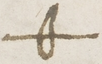 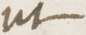 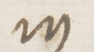 | 20 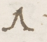 a31 | a32 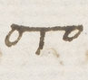 | a33 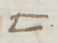 | 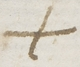 b25 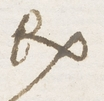 | 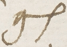 | b27 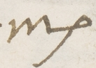 | 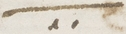 b28 | d40 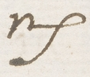 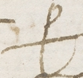 | 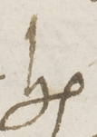 d41 | d42 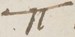 | 36 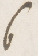 d43 | 39 g50 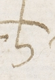 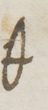 | 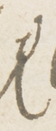 g51 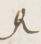 | 44 g53 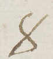 | 45 46 o27 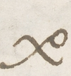 | 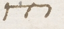 o28 | 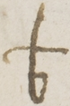 d29 | o29 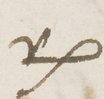 | o30 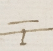 | 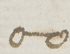 |
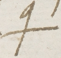
r23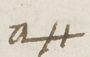
?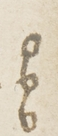
?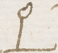
?Full Italian reading, in folio order
Folio 214r — P1
Ill[ustrissi]mo et Ex[cellentissi]mo, unico mio Sig[nor], Sig[nor] mio sempre col[endissi]mo. Baciate le mani di V[ostra] Ex[tia].
Dopo visitati questi lochi contorni a Valladolid sono venuto a Paredes alli viiii del presente, ove in parte mi e stata data cognitione di cio che sequentemente le scrivo, del che V[ostra] Ex[tia] ne potra far quel giuditio che per sua natia prudentia sole.
El Sig[nor] gran Cancello, per letre sue di xxvii del passato, giunse in Barcellona con Messer Gio. Barto. di Gattinara, Martino Centurio[ne?], [generale in herba?] di M[onseigneu]r di Borbon, et certi pochi de sua famiglia. Li piu restaro in Genoa per mancamento di navigli. Hebbe sua signoria navigation assai contraria, si per maritima tempestate come per esser stato seguito d'alcune galere dell'armata francese. Si attende alla fine di questo alla corte Ces[are]a.
Mi e affirmato da molti che sua signoria si trova in poca bona gratia del [imperatore?] per una sola [cosa?] che li e inputata: che e che, per causa di due sue letre intercette al vicere, che al subsidio di Genua inviasse le galere di Napoli, et ordinasse a Lope di Soria che del resto de li [cento?; letterale cenru con G70] milla ducati del cambio ne usase a beneficio di quella citta, si per provisione di fanti et di victuaglie.
Folio 214v — P2
Se non che altramente el tutto si perderebbe. V[o]gliono li soi dectractori, che sono alla scoperta el confessore et secretario alemant, che Lautreco per tale informacione haggia inviato [parte?] delle genti [sue?] alla obsidione di Genua, le quali in altro loco erano destinate, et che per questo detta città non si sia più diffesa.
Io pe[r] el gran bisogno che veggo che Sua Maestà? ne tene non posso pensare se non che egli si conservi in bona gratia del imperatore?, et per questo non cessarò di confortare V[ost]ra Ex[tia] che ordini per sue letre al Bilia che se intertenghi bene con esso. Hora non possemo sperare se non boni offi[c]i da sua signoria?, maxime con la morte di Borbone.
Ho deliberato ire ad incontrarlo sino a tre giornate, et so che per questo non serò tenuto per sospetto dalli oratori confederati.
Folio 215r — P7
Mons.r di Tarba mi ha dato una copia delle p[redet]te letre intercette, le quali harei inviato a V.ra Ex.tia se'l portator presente non si fosse mostrato tanto difficile.
L'ambassatore del re di Portogallo, novamente venu[to?] a nome del papa, non e mandato principalmente da sua santitate. Si [et: passo incerto] [s?]crive el datario al signore nuncio. Ma essendo egli per passare al suo re, prego nostro signore che li [facesse?; letterale: p-ce-sse] honore de uno breve, in sua persona al [imperatore?], con auctoritate de tractare suo concerto, promettendo di farlo subito relaxare et restituirlo ne la pristina amista con [Sua Maesta?] et nel antico stato de le chiesa. El che non gli e soccesso, et havea promesso detto non solo in [Italia?; letterale: i-ra-lo-a], ma etiamdio in Ispagna.
Qui e stato cognosciuto per homo legiero, et con questa bona op[i?]nione di se, domane di corte cesarea si parte per Portugallo. Esso ambassatore ha portato
Folio 215v — P3
Una letra di [proria: propria?] mano del papa al nuncio in credenza di Saporito, camerero di sua Santitate, qual morìo in Genua, che
tanto savia et prudentemente scritta che poco più a pena si potrebbe desiderar,
Exhortandolo a non mancare al devuto serviciu. Così dui brevi al [imperatore?], pieni di molte belle sentenze, et con belle ragioni persuade a [Sua Maestà?] a tore el patrocinio de la chiesa et non opprimerla, maxime sub fide, che [indoctamente: passo incerto] scritti.
L'abbatino se ne ritorna expedito et desidera […] et l'[imperatore?] gli ha concesso quanto ha saputo desiderare et chiedere. Vero è che in molti capi, per non sapere [Sua Maestà?] di quanto momento sono, scrive al vicere di Napoli, et meglio informato delle cose de Italia, che faccia contento el [sardetto: sopradetto?] marchese, perciò che si pote, che così è sua mente. [to to qu gu: sequenza irrisolta.]
[Nissuno?] particolar ho possuto intender più del già scritto; intendendone [...: termine al margine destro non letto con sicurezza], la prima opportunitate n'avisaro V.ra Ex.tia. Questo tenga per certo,
Che 'l concerto è seguito con questa maiestate; che egli si fosse assettato con Franza, et qui tenemo nova che lo prati-
Folio 216r — P5
cava per mezo del cavalero Casale.
L'imperatore? ha inteso in questo concerto, per li ricordi del duca di Ferrara et opera del nuncio. Credo però che 'l marchese, per essere obligato a Fiorentini, che non si mostrarà in favore totalmente del imperatore?, ma che farà che Pagolo Luzasco, con trecento cavalli legieri, passarà al servicio de Sua Maestà?.
Et eri el prefato abbatino dovea partire per costà in tutta diligentia, et per esso ho scritto a vostra excellentia sotto coperta [de?; letterale: m] la signora marchesana di Mantua. [Su: frammento finale irrisolto.]
Li Mag.ci S.ri Ambasciatori francesi tengono letre dal Re Chr.mo di XXIX di agosto, per le quali gli è significato la [clade?] di Portofino, deditione di Genoa, et speranza di presto ottenere Alex.[andria?]. Giuntamente mi dicono haver commissione dal re loro che la tractatione della pace si pratichi sopra el contenuto delli capitoli fatti per [Madril?], cosa che fin qui el prefato Chr.mo non haveva voluto assentire, et che per questo hano quasi certa speranza [de venir?; correzione interlineare non interamente risolta] seguire appontamento. Eglino con li S.ri oratori inglesi sono stati a Pallenza [et costà stano?] per discuter ciò che 'l re loro pote o non pote giurar delli soprascritti capitoli.
Folio 216v — P4
Ambidoi mi hano giurato che 'l Christianissimo [letterale: Christianitsimo] ultimamente li scrive che omnino vole che nel concerto vostra excellentia resti nel stato di Milano, el che non convene con quello che proximamente le scrisse. Non di meno me remetto alla veritate.
El signore ambassatore V[e]neto et io soli, antiheri, fossemo dal signore nuncio apostolico a Usiglios, et lo pregassemo che volesse andare a Palinza et ivi dimorare mentre che li oratori fra[n]cesi vi starano, et che usi diligentia di sapere la veritate di quello practicarano, et maxime circa el fatto di essa. Ci ha promesso di farlo volontieri, et così intendemo che sua signoria vi è ita.
Sono quasi certo che ci servirà, et per rispetto di vostra excellentia, per quello deve ad Italia tutta, et per l'amistate tene con el detto oratore
Folio 217r — P6
veneto. Intendo che l'[imperatore?], subito intesa la deditione di Genua, m'a mandato vno novo despacchio a monsignore di Miliao, che [fino?; letterale fi-di] a quel tempo non era inbarchato per Roma. Et mi e accennato che [Sua Maesta?] revoca la liberatione del papa per li novi soccessi di Lombardia.
A questo credere [me?; letterale pe] inducono li mali officii che li oratori ferraresi et li agenti di Colonesi publicamente fano contra sua [santitate?; letterale sansitate] presso l'[imperatore?], [de?; letterale m] la quale [quanto?] ne ragionano, non la sano nominare se non per traditore, falso papa, bastardo, fabricatore di veleni et mille altri [obbrobri?; letterale obbro-to?-bri], che longo serebbe scriverli. [The cipher block then has three remaining symbols o29;vp;b+, letteralely v-v-u. Their function is unresolved.]
Hoggi el mag.co M[esser] Ludovico Catto Dottor di leggi vecchio ambassator del Ill.mo Sig.r Duca di Ferrara e andato a Valladolid per tor congiedo dalla Ces.a M.ta [parola cancellata] ritornarsene alla patria. Io lo ho trovato sempre molto inclinato al beneficio di V.ra Ex.tia, et pero Essa gli [n’è?] in carico.
Con esso lui mi e detto che expedirano Troilo Negrono; che a li signori Colonesi [Sua Maesta?] di[ce?] hora di volere fare molte gracie. Se questo è, la presente difficultate de le cose lombarde lo he causato; dubitano che presso l'una ruina segui l'altra del reino di Napoli.
Sono qui litre di messere Andrea Borgo
Folio 217v — P8
[ne?] l'[imperatore?] et Valdesio, gia suo servitore, piene de consigli pro opprimenda Italia et longhi discorsi per servare el stato di Milano alla devotione di [Sua Maesta?]. Nel ultimo si risolveno che l'infante e quello uno che lo pote tenere et deffendere da qualunche violentia che dessendesse per o[c?]cuparlo.
Dopo presa Genua si e detto che l'[imperatore?] ha expedito per fare descendere lo infante et dare tutta Italia in preda ad Alemeni; che [Sua Maesta?] dimostra maggiore core che mai, et che dal confessore e uscito che la perdita di Genua e stata ono stimolo goliardo a l'[imperatore?], del tutto si dimostri alla [guerra?; letterale gvrra] et [quanto?] potenti siano le lor [forze?; letterale ffze]. [Seguono i gruppi finali LU-V-I, non risolti.]
Si e detto anchora che la Ces[ar]ea M[ajes]ta ha venduto el stato del Co[n]te di Caiaza nel regno per XXVIII [migliaia di] ducati al figliolo del conte di Monteleone vice re di Sicilia;
Nel S[ignor] Marco Pio ogni giorno cognosco accrescerli bona voluntate verso V[ost]ra Ex[tia] et desiderio di farle servitio: il che in me ha causato una certa no[n] vulgar osserva[n]tia co[n] sua Sig[noria] che mi constringe al spesso volte esser co[n] essalui; et molto honorarla.
Folio 218r — P9
Scritto fin qui, per piu vie sicure sono stato avisato che l'[imperatore?] ha mandato per tre correri la investitura del stato di Milano al infante [abbassi: parola ancora non risolta nel contesto] alla deffension di quello stato, et che di presente gli provede di cento milla ducati.
La perdita di Genua si e rafermata per via del signore di Monaco, al quale [Sua Maesta?] provede de danari se conservi a sua devocione. [Segno finale sovrascritto/corretto, non sciolto.]
No[n] piu per hora saprei che scriverle, se no[n] che in sua bona gra[tia] quanto piu posso humil[men]te mi raccomando, pregando N. S. Iddio che le doni quella felicita che p[er] se stessa desidera. Di Paredos el XV di Settembre MDXXVII.
Di V[ostra] Ill[ustrissi]ma et Ex[cellentissi]ma S[igno]ria humilissimo et perpetuo Servo el Gilino
05 Method
The DECODE images were fetched at full size with the project’s login (the records carry no transcriptions). L&P IV was consulted on British History Online and State Papers VI and VII on the Internet Archive to identify each letter; L&P cites the old Cotton foliation, DECODE the new. The cipher of R8613 was transcribed sign by sign from line crops at about three times the overview scale (r8613_tokens.txt). decode.py applies key.tsv. R8476 and Gilino’s letter were transcribed by sub-agents working from crops, with Gilino’s transcription corrected in 24 places against the key. The neighbouring DECODE records of both letters were opened; all are Lee’s and Poyntz’s despatches in the English cipher. A last pass on R8613 at full resolution re-read two signs (“p10 +” is p+ and a reversed c with 10; “v3” is y3) and settled pinguiores eis and spes nutriret.
06 What remains uncertain
- R8613, first page: line 1, three signs (c; b, t7), in “[..1] habere cupere, ho[..2]”; line 7, one sign (a dot-like mark) after oblatis eis; line 8, three signs (W14, K, h) before ad … venirent; line 11, one sign (Q8) after cupere. Each occurs once.
- R8613, second page: single signs on lines 7, 13 and 16 (bn, d8, b6); three signs after disseminari (line 19) and three before sed ad perpetuam (line 22).
- Values that rest on one place (grade C): u8 o and Q1 i (pinguiores eis), h1 s; and the context words dimittatur, sermonem, ora, istos, marked (?) above. h = s in spes and fratris against h = o elsewhere in R8613 (grade M).
- Gilino: nine signs not deciphered and 45 doubtful words, from the writer’s own a/o and i/e confusions and from signs the image does not separate. They are listed in
gilino/reading_r8572.txt. - Who wrote the Gilino letter: it is signed “el Gilino” and names “the Bilia” in the third person, and the key is the one made “with the Cavaliere Bilia”; a Sforza nomenclator of 1525 (R5287) lists Bilia and Ghilino as two men.
Measured: R8613 has 814 cipher signs, 17 not deciphered; 797 (97.9%) give sense. Gilino 96.1%. Together 3,669 of 3,803 (96.5%).
07 Sources
- British Library, Cotton MS Vespasian C IV f. 363 (old f. 332) and ff. 214–218 (old f. 199 ff.); images via DECODE R8613 and R8572. Siblings: Vesp. C III f. 304 (R8476), Vesp. C IV ff. 313 and 315 (R8589, R8590).
- Key for Gilino: Archivio di Stato di Milano, Carteggio Sforzesco cart. 1591 no. 24, DECODE R5258.
- Letters and Papers, Foreign and Domestic, Henry VIII, vol. IV, ed. J. S. Brewer (1870–76), nos. 2727, 3291, 5282, 5300, on British History Online.
- State Papers, King Henry the Eighth, vol. VI (1849), pp. 552–556 (R8476 with its deciphered passages).
- S. Tomokiyo, Cryptiana, page henryviii.htm: the partial table for the Bishop of Worcester.
- Related pages: Ghinucci, Lee and Poyntz to Wolsey, 1527 (the English cipher of the same embassy); Del Vasto 1527 (the “Garbino” letter of 1528, first grouped with these, is in Ranzo’s initial-letter code and stays open there).
George Lasry’s Gilino edition, research notes and revisions, 7 October 2026; supplied PDF and accompanying corrected files. Contribution files and source hashes.
Transcriptions, keys, decoders and readings: targets/superscript/ in the repository.